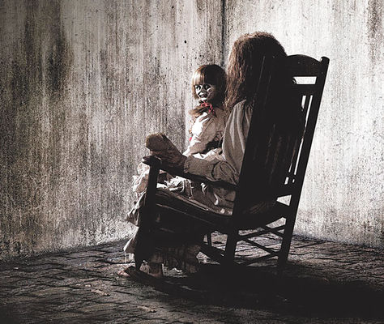
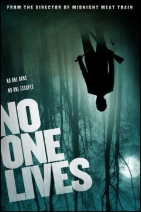
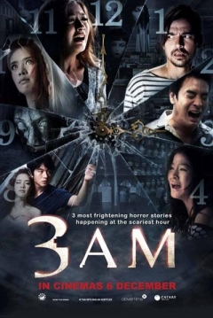
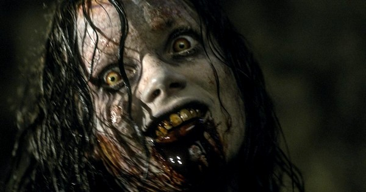
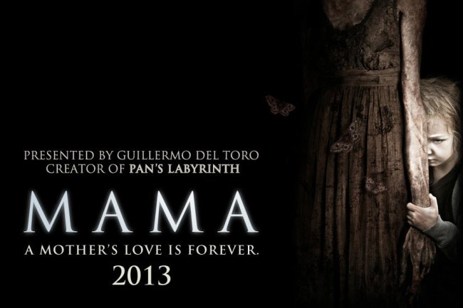

Las mejores peliculas de terror del año 2013 ahora en un listado junto con su sinopsis:
THE CONJURING ó EL CONJURO
Antes de que existiera Amityville, existió Harrisville. Basada en una historia real,
la película relata la terrorífica historia verídica de dos investigadores paranormales
reconocidos mundialmente, Ed y Lorraine Warren, quienes son convocados para ayudar a una
familia aterrorizada por una presencia tenebrosa en una apartada granja. Forzados a
enfrentarse a una entidad con poderes demoníacos, los Warren se verán atrapados en la
realidad más aterradora de sus vidas.
Género: Terror-Suspenso
Distribuidora: Warner Bros. Pictures
Clasificación: B
Fecha de estreno: 23 de agosto 2013

NO ONE LIVES ó NADIE QUEDA VIVO
Una banda de jóvenes despiadados toman como rehén a una pareja en una casa abandonada
en medio de ninguna parte. Cuando la chica es asesinada, inesperadamente la situación
cambia y la banda se verá perseguida por un experimentado asesino.
Género: Terror
Distribuidora: Hume. Pictures
Clasificación: B
Fecha de estreno: 23 de febrero 2013

3 A.M.
El film se compone de tres historias escalofriantes. Dos hermanas que son dueñas de una
tienda de pelucas son perseguidas por un fantasma femenino cuyo pelo se convierte en una
de las pelucas a la venta. Un empleado de la funeraria se enamora de un cadáver femenino
que murió junto a su novio en un accidente justo antes de su boda. Dos consejeros de la
sociedad a quienes les gusta jugar bromas de miedo en sus empleados finalmente obtienen
su merecido cuando se enfrentan a un fantasma real. Tres historias ambientadas a las 3 am,
la más espantosa hora de la noche, donde todos los espíritus son libres de vagar.
Género: Terror
Distribuidora: Kiatkamon
Clasificación: B
Fecha de estreno: 16 de Diciembre 2013

EVIL DEAD ó POSESIÓN INFERNAL
En la nueva y esperada versión de la exitosa película de horror de culto de 1981, cinco amigos
veinteañeros se albergan en una cabaña remota. Cuando descubren un Libro de los Muertos, sin
querer invocan a los demonios ocultos que viven en los bosques cercanos, quienes poseen a
los jóvenes sucesivamente hasta que sólo uno de ellos queda intacto y lucha por sobrevivir.
Género: Terror
Distribuidora: Ghost House Pictures, Sony Pictures, FilmDistrict
Clasificación: C
Fecha de estreno: 5 de Abril 2013

MAMÁ
Guillermo del Toro presenta MAMA, un thriller sobrenatural que cuenta la escalofriante historia de
dos niñas que desaparecieron en el bosque el mismo día en que su madre fue asesinada. Años después
son rescatadas y empiezan una nueva vida, pero descubren que alguien o algo sigue queriendo arroparlas
por la noche.
Hace cinco años, las hermanas Victoria y Lilly desaparecieron de la urbanización donde vivían sin dejar rastro.
Su tío Lucas (Nikolaj Coster-Waldau) y su novia Annabel (Jessica Chastain) las han buscado sin cesar desde entonces.
Cuando ocurre lo imposible y las niñas aparecen en una cabaña medio derruida, la pareja empieza a preguntarse si no
han acogido a alguien más en su casa además de las niñas.
Annabel intenta ofrecer una vida normal a sus sobrinas, pero poco a poco se convence de que hay una presencia malévola
en la casa. ¿Sufren las hermanas de estrés traumático o viene un fantasma a visitarlas? ¿Cómo pudieron sobrevivir
totalmente solas durante cinco años? Mientras intenta contestar a estas inquietantes preguntas, la nueva madre acabará
descubriendo que los susurros que se oyen a la hora de dormir proceden de los labios de una presencia letal.
Género: Terror
Distribuidora: Universal Pictures
Clasificación: B
Fecha de estreno: 18 de ENERO 2013

Y esto fue la lista de las mejores peliculas de terror del año 2013. Espero les haya gustado...!